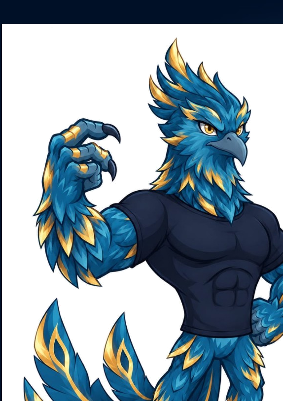
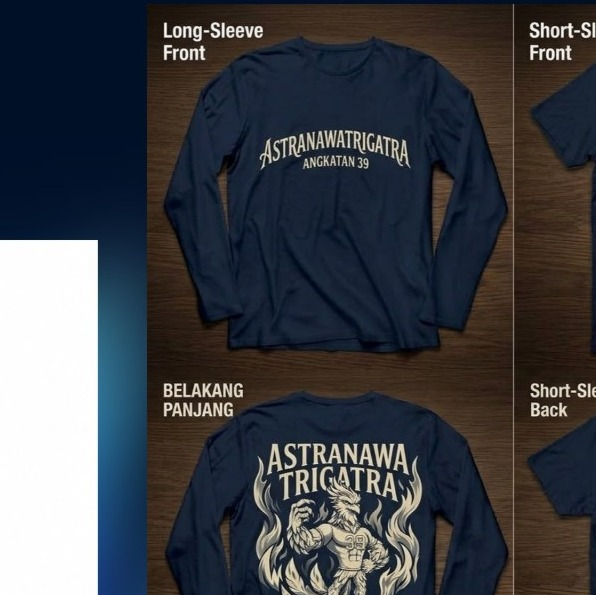

COLOR POLL · ANGKATAN 39
ONE CLASS.
ONE STYLE.
Bantu tentukan warna hijab yang paling cocok dipadukan dengan kaos Angkatan 39. Pilih favoritmu, suaramu ikut menentukan!
Pilih warna ↓ Voting bersama angkatan

EST.39RISE AS ONE
THE MERCH
Kenali desain kaosnya.
Warna dasar navy dengan identitas biru dan emas Angkatan 39.

ANGKATAN 39ASTRANAWA TRIGATRAReferensi desain kaos dari panitia
MAKE YOUR PICK
Warna hijab pilihanmu?
Pilih satu warna yang menurutmu paling serasi.
STYLE PREVIEW
Mix & match dulu.
Pratinjau warna membantu membayangkan kombinasi hijab dengan kaos navy.
Belum memilih
ASTRANAWA
TRIGATRA
TRIGATRA
Belum ada pilihan
Ketuk salah satu warna untuk memilih.
ⓘ Demo voting sederhana: satu suara per browser/perangkat. Hasil lengkap disembunyikan sampai panitia menutup voting. Mode demo lokal tidak tersinkron antarperangkat; aktifkan Firebase untuk voting online.
THE COUNTDOWN
Suara angkatan.
Hasil sedang dirahasiakan
Grafik dan jumlah suara akan dibuka setelah panitia menutup voting. No spoiler dulu 🤫